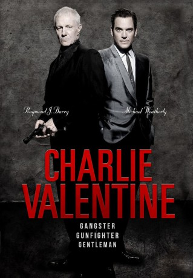

#9464 Charlie Valentine - Gangster, Gunfighter, Gentleman
Alternativ: The Hitmen Diaries: Charlie Valentine (Englischer Titel)
 
 IMDB-Wertung: 5.5 / 10
IMDB-Wertung: 5.5 / 10  Metascore: 0
Metascore: 0 
Charlie Valentine ist ein Gangster der alten Schule: Charmant, stilvoll, mit Sinn für gutes Essen, teuren Wein und schöne Frauen. Er will seinen letzten großen Coup landen. Doch der „perfekte Plan“ geht schief - sein Team stirbt im Kugelhagel. Aus Angst vor der Rache von Unterwelt-Schwergewicht Rocco flüchtet sich Charlie zu seinem Sohn Danny zu dem er nie viel Kontakt hatte. Danny ist fasziniert von der kriminellen Welt seines Vaters und will in dessen Fußstapfen treten. Charlie bringt ihm das Handwerk eines Gangsters bei und zusammen planen sie einen neuen Überfall. Doch Rocco und seine Schergen sind ihnen dicht auf den Fersen …
Jahr: 2009
Dauer: 96 Minuten
FSK: 18
Land: USA Studio: Access-ATonspuren: DTS - ,
Untertitel: Deutsch,
Auflösung: 1080p (1920x720) Größe: 6236 MB
Genre: Thriller, Drama, Krimi
Regisseur: Jesse V. Johnson
Drehbuch: Jesse V. Johnson
Soundtrack: Marcello De Francisci, Wagner Fulco
Darsteller:
 Raymond J. Barry als Charlie Valentine
Raymond J. Barry als Charlie Valentine- Michael Weatherly als Danny Valentine
 James Russo als Rocco
James Russo als Rocco Tom Berenger als Becker
Tom Berenger als Becker Steven Bauer als Ferucci
Steven Bauer als Ferucci- Maxine Bahns als Jenny
- Valerie Dillman als Blondie
 Keith David als Sal
Keith David als Sal Dominiquie Vandenberg als Dom
Dominiquie Vandenberg als Dom Robert Blanche als Wiseass
Robert Blanche als Wiseass- Kevin Scott Allen als Marko
- Randy Crowder als Teddy
 Glenn Taranto als Mob Collector
Glenn Taranto als Mob Collector- Anthony Vitale als Mob Driver
 Vernon Wells als Broad
Vernon Wells als Broad Jerry Trimble als Mickey
Jerry Trimble als Mickey- Matthias Hues als Victor
- Robert Dill als Louie
- Melvin Abston als Bum
- Joey Anaya als Dennis
- Eleonora Barna als Ferucci's Dancer
- Madison Bauer als Dancer
- Julianne Bianchi als Waitress
- Lisa Catara als Red
- Mare Costello als Mom
- Victoria De Mare als Ferucci's Dancer
 David Mattey als Franklin
David Mattey als Franklin- David Pearl als Bar Patron #2
- Jack Piatt als Joey
- Steve Rally als Anthony
- Margy Stein als Waitress
- Christian Stokes als Joe
- Susanna Vilen als Bartender
- Anthony Wemyss als Dad
 Mike Wilson als Security guard
Mike Wilson als Security guard- Julie Burrise als Club Girl (uncredited)
- Tim Camarillo als Security Guard #2 (uncredited)
- Charles W. Crowe Jr. als Lucky
- David Bantly als Vendetti
- John Branch als Johnny
- Gary Casey als Stripclub Guy
- Craig Cochrane als Club Patron #1
- Eurydice Davis als Jasmine
- Robin Dill als Bouncer
- Johnathon Freeman als Tooley
- Vito La Morte als Bartender
- Luke LaFontaine als Spick
- Neil G. Phillips als Kinkade
- Katalina Viana als Dancer
- Katy Walters als Dancer
Datei: X:\FSK18-2000-2009\Charlie Valentine - Gangster, Gunfighter, Gentleman (2009, FSK18, 1920x720).mkv seit 03.09.2018
Festplatte: FSK18
 Es gibt insgesamt 106 Filme in der Gruppe 'FSK18-2000-2009'
Es gibt insgesamt 106 Filme in der Gruppe 'FSK18-2000-2009'